Getting Started with cliomicplot
Lucas VHH Tran
2026-07-16
Source:vignettes/cliomicplot.Rmd
cliomicplot.RmdOverview
cliomicplot is an R package for creating high-quality, publication-ready visualizations for clinical and multi-omics data analysis. Built on ggplot2, it provides 16 specialized plot types, 10 journal-specific themes, and 55+ color palettes — all through a clean, formula-based API.
This vignette walks you through the core concepts and basic usage.
Installation
# From source
remotes::install_local("path/to/cliomicplot")
# Dependencies
install.packages(c(
"ggplot2", "scales", "survival", "survminer",
"RColorBrewer", "reshape2", "ggrepel",
"patchwork", "ggpubr", "ggtext", "circlize"
))
library(cliomicplot)
#> cliomicplot 0.1.0 - Publication-ready clinical & omics plots
#> Main function: cliplot() | Themes: clitheme() | Params: clipar()The Formula Interface
cliomicplot uses a formula-based API: y ~ x | group.
# Basic scatter with grouping
cliplot(Sepal.Length ~ Petal.Length | Species, data = iris)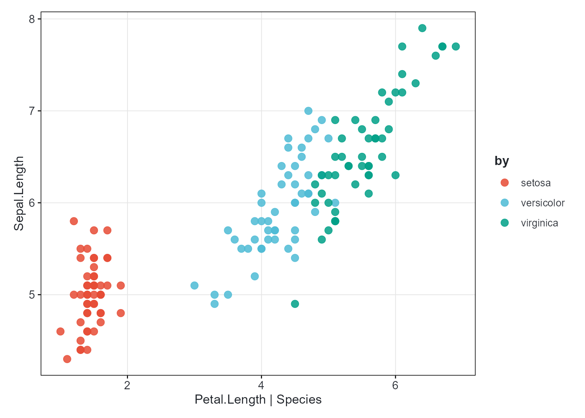
The | group part is optional. Every plot automatically
gets:
- Proper axis labels derived from variable names
- A legend when grouping is present
- A color palette applied to groups
Choosing a Plot Type
Pass type = "..." or a type_*()
function:
# Boxplot with built-in statistical test
cliplot(Sepal.Length ~ Species, data = iris,
type = "boxplot",
stat.test = "kruskal.test",
stat.label = "p.signif",
palette = "jco")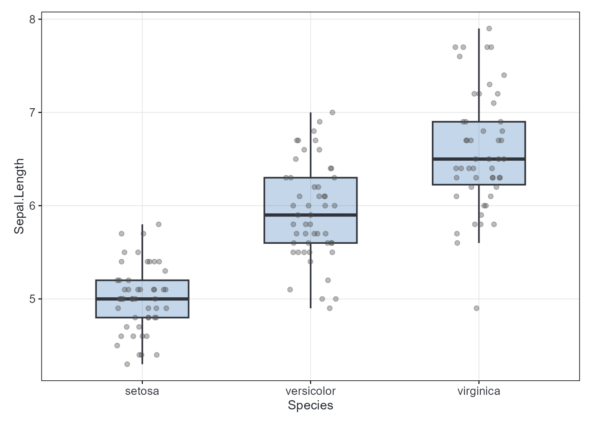
When type is omitted, cliomicplot guesses based on data
types:
| x variable | y variable | Auto-detected type |
|---|---|---|
| numeric | numeric |
"points" (scatter) |
| factor/character | numeric | "boxplot" |
| factor/character | (none) | "barplot" |
| numeric | (none) | "histogram" |
Statistical Annotations
Built-in statistical test support — no extra packages needed:
# t-test with p-value formatting
cliplot(len ~ dose, data = ToothGrowth,
type = "boxplot",
stat.test = "t.test",
stat.label = "p.format",
palette = "jco")
#> Warning: Orientation is not uniquely specified when both the x and y aesthetics are
#> continuous. Picking default orientation 'x'.
#> Warning: Continuous x aesthetic
#> ℹ did you forget `aes(group = ...)`?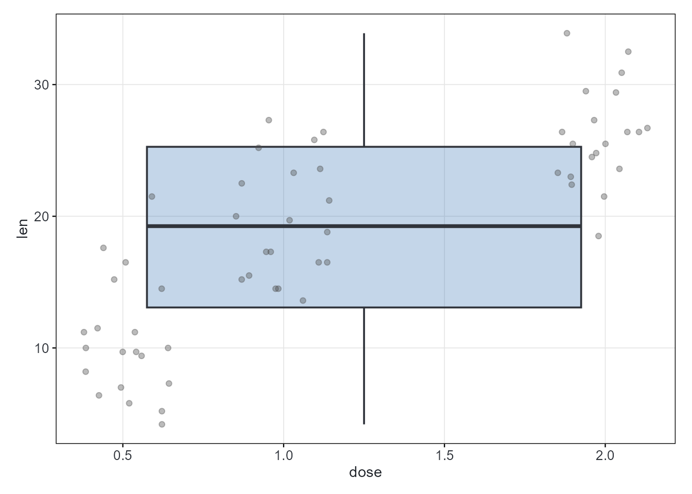
Supported tests: "t.test", "wilcox.test",
"anova", "kruskal.test".
Supported label formats: "p.format" (e.g.,
p = 0.023), "p.signif" (e.g., *,
**), "p.adj".
Theming
Persistent themes
Set a theme that applies to all subsequent plots:

# The theme persists
cliplot(len ~ dose, data = ToothGrowth, type = "boxplot")
#> Warning: Orientation is not uniquely specified when both the x and y aesthetics are
#> continuous. Picking default orientation 'x'.
#> Warning: Continuous x aesthetic
#> ℹ did you forget `aes(group = ...)`?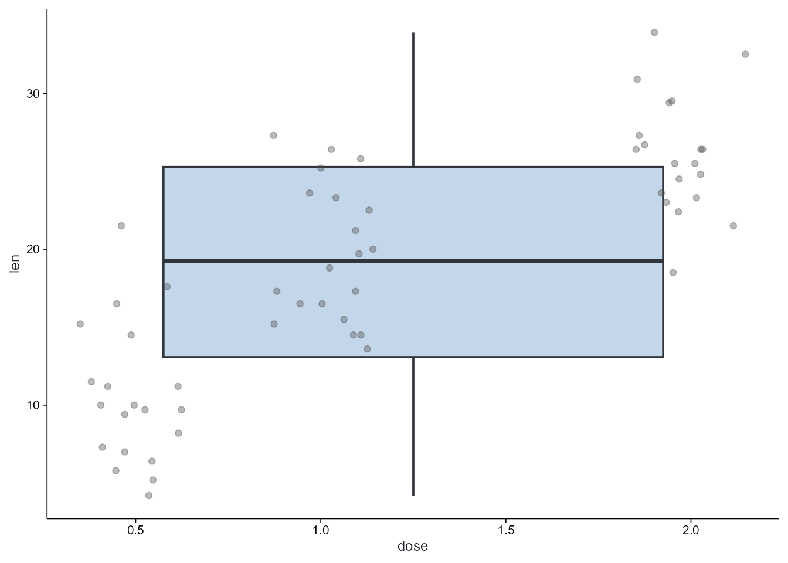
clitheme() # reset to defaultEphemeral (per-plot) themes
Apply a theme to one plot only:
cliplot(mpg ~ wt, data = mtcars, theme = "nature")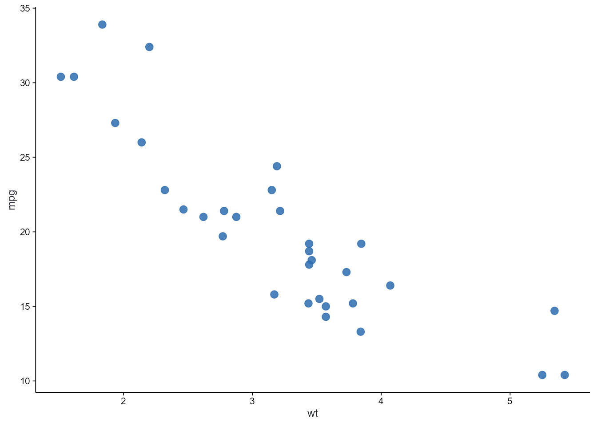
cliplot(Sepal.Length ~ Species, data = iris, type = "boxplot", theme = "dark")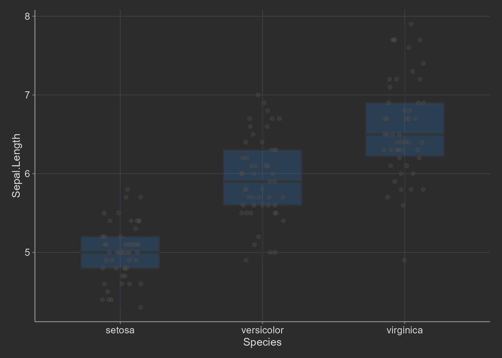
Available themes
| Theme | Style |
|---|---|
cli_bw |
Clean black-and-white (default) |
cli_classic |
Classic with axis lines |
cli_minimal |
Minimal and modern |
nature |
Nature Publishing Group |
science |
Science / AAAS |
nejm |
New England Journal of Medicine |
lancet |
The Lancet |
cell |
Cell Press |
broadsheet |
Publication print style |
dark |
Dark background (presentations) |
Color Palettes
cliomicplot ships with 55+ palettes in a unified system:
# List all palettes (first 20 shown)
head(cli_palette_list(), 20)
#> [1] "jco" "nejm" "lancet" "nature"
#> [5] "science" "okabe_ito" "tableau10" "tol_muted"
#> [9] "heatmap_rdbu" "heatmap_rdylbu" "heatmap_prgn" "volcano"
#> [13] "pastel" "soft" "neon" "cyberpunk"
#> [17] "blues" "reds" "greens" "purples"
# Use any palette by name
cliplot(Sepal.Length ~ Petal.Length | Species, data = iris,
palette = "jama")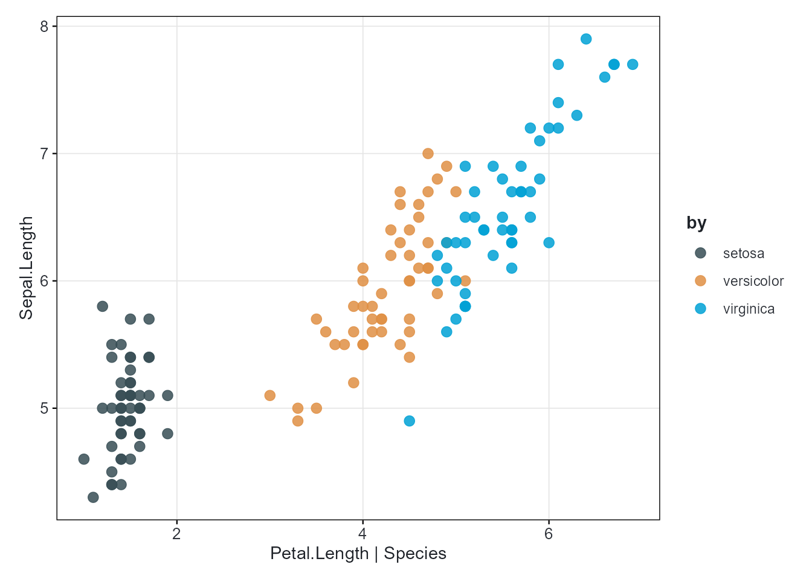
cliplot(Sepal.Length ~ Petal.Length | Species, data = iris,
palette = "cosmic")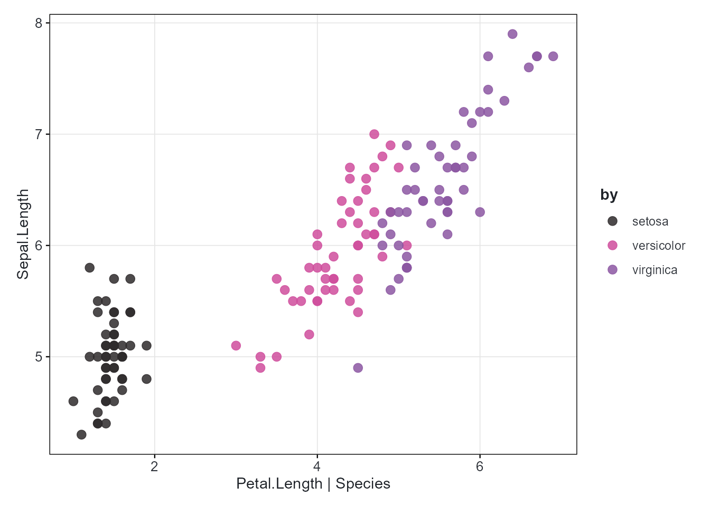
Standalone ggplot2 scale usage
All palettes work as standalone scales for any ggplot:
library(ggplot2)
#> Warning: package 'ggplot2' was built under R version 4.5.3
ggplot(iris, aes(Sepal.Length, Petal.Length, color = Species)) +
geom_point(size = 3) +
palette_scale("npg", "color") +
theme_bw()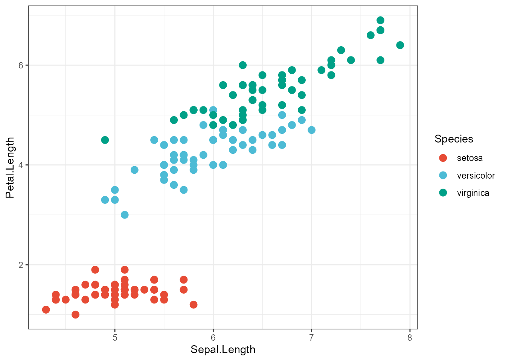
Markdown Text Rendering
Add bold, italic, colored, subscript/superscript text to labels:
cliplot(mpg ~ wt, data = mtcars,
title = "**Mileage** vs *Weight* in mtcars",
subtitle = "n = 32 vehicles, <span style='color:#E64B35'>1974 Motor Trend</span>",
caption = "*Motor Trend* (1974)") +
cli_markdown()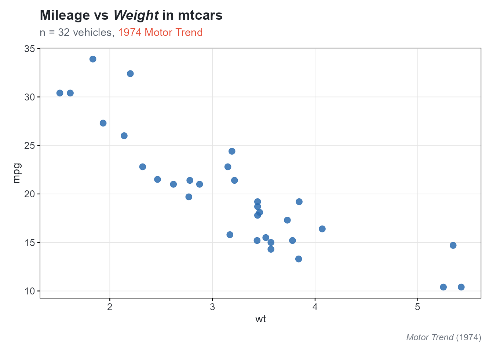
Selective markdown
# Only the title renders markdown
cliplot(mpg ~ wt, data = mtcars,
title = "**Bold Title**",
xlab = "Weight (1000 lbs)", # plain text
ylab = "Miles / Gallon") + # plain text
cli_markdown("title")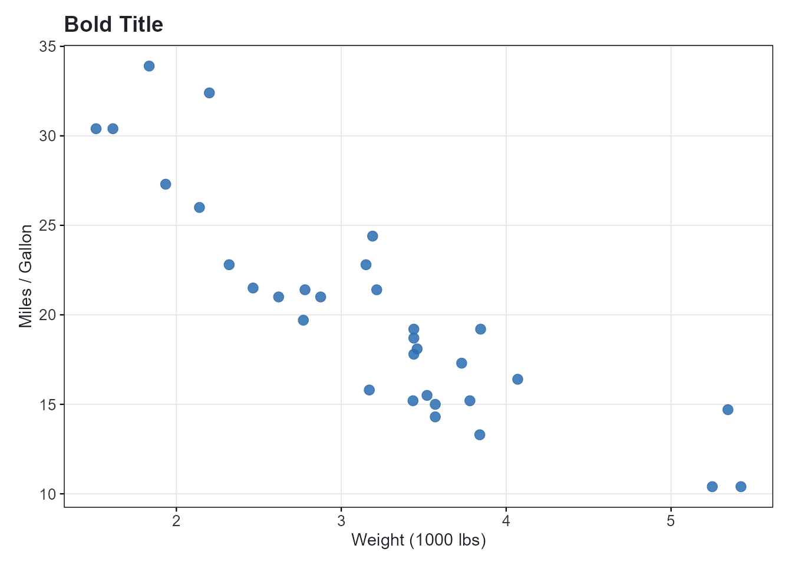
Global Parameters with clipar()
Set defaults that apply to all subsequent plots:
# View current parameters (first 10)
names(clipar())[1:10]
#> [1] "facet.font" "font.cap" "stat.test"
#> [4] "facet.border" "facet.cex" "palette.diverging"
#> [7] "file.width" "theme.default" "legend.direction"
#> [10] "cex.sub"
# Set defaults
clipar(palette.qualitative = "nejm")
clipar(stat.test = "wilcox.test")
clipar(file.width = 8, file.height = 6, file.res = 600)
# Query
clipar("palette.qualitative")
#> [1] "nejm"Saving to File
Save plots directly from cliplot() in one call. Supports
pdf, png, jpg, svg, and tiff:
cliplot(Sepal.Length ~ Petal.Length | Species, data = iris,
file = "iris_scatter.pdf",
width = 6,
height = 5)
# PNG with high DPI
cliplot(mpg ~ wt, data = mtcars,
file = "mpg_wt.png", width = 8, height = 6)Set global defaults for file output:
clipar(file.width = 8, file.height = 6, file.res = 600)
cliplot(Sepal.Length ~ Petal.Length | Species, data = iris,
file = "fig1_highres.pdf")Next Steps
-
vignette("oncology", package = "cliomicplot")— End-to-end oncology analysis -
vignette("multiomics", package = "cliomicplot")— Multi-omics exploratory analysis -
vignette("themes-palettes", package = "cliomicplot")— Deep dive into themes & palettes